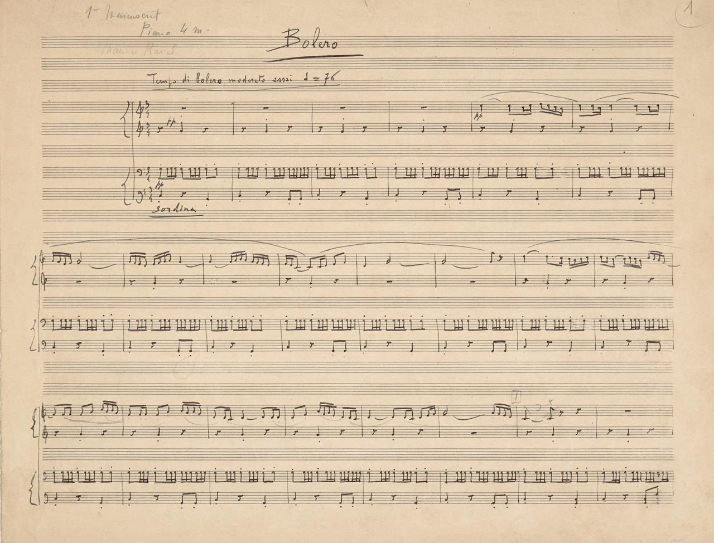

디지몬을 본 사람이라면 한 번쯤 들어봤을 이 음악.
1928년 프랑스 작곡가 모리스 라벨이 만든 '볼레로'라는 곡임.
그런데 이 곡에는 특이한 점이 하나 있음.
약 15분 동안 같은 리듬과 선율이 끊임없이 반복된다는 것.
악기와 음량만 바뀔 뿐, 멜로디는 거의 변하지 않음.
그런데 1997년, 정신과 의사 에바 시불스카는 이 반복이 단순한 작곡 기법이 아니라
뇌질환으로 인한 보속증일 가능성을 제기함.
실제로 라벨은 1927년경부터 글을 쓰거나 단어를 떠올리는 데 어려움을 겪기 시작한 것으로 추정됨.
시간이 지날수록 상태는 악화됐고, 결국 작곡조차 할 수 없게 됨.
1933년 라벨이 친구에게 털어놓았다고 전해지는 말이 있음.
라벨: "잔 다르크 오페라는 내 머릿속에 있어. 음악도 들리지만, 이젠 쓸 수가 없어."
이후 신경과 의사 알라주아닌의 관찰에서도 언어장애와 동작 수행 장애가 확인됨.
놀랍게도 음악을 듣고 판단하는 능력은 비교적 유지되어 있었음.
즉, 음악을 이해하지만 표현하지 못하는 상태였던 것.
의사 A: 이거 전두측두엽 치매 계열 질환일 가능성이 있는데요?
의사 B: 근거가 뭡니까?
의사 A: 이런 질환에서는 같은 행동을 반복하는 보속증이 나타날 수 있습니다.
의사 B: 그게 볼레로랑 무슨 상관이죠?
의사 A: 볼레로도 똑같은 선율을 계속 반복하잖아요. 실제로 2002년 연구에서도 뇌질환이
후기 작품에 영향을 줬을 가능성을 제기했습니다.
의사 B: 잠깐만요. 그런데 라벨은 1928년 편지에서 이 곡의 구상을 직접 설명했습니다.

라벨의 1928년 편지: "음악도 작곡도 없이, 오직 관현악 효과만."
의사 B: 애초에 반복을 의도한 실험이었다는 거죠. 게다가 볼레로 이후에도
정교한 피아노 협주곡 두 편을 완성했습니다.
의사 A: 그렇다면 질병과는 무관하다는 겁니까?
의사 B: 무관하다고 단정할 수도 없지만, 반복된다는 이유만으로 치매의 증상이라고 할 증거도 부족합니다.
실제로 2003년과 2010년의 신경학 문헌에서는 볼레로를 질병의 산물로 해석할 근거가 부족하다고 지적함.
결국 라벨은 1937년 뇌수술을 받았지만 회복하지 못하고 세상을 떠남.
사후 부검도 이루어지지 않아 정확한 병명은 지금까지 밝혀지지 않았음.
2024년 의학 연구에서도 전두측두엽 변성질환 계열의 가능성을 검토했지만 확진은 불가능하다고 결론지음.
그러니까 볼레로가 치매의 전조였다는 건 실제 의학적 가설이지만, 입증된 사실은 아니라는 것.
그리고 라벨이 말년에 남겼다고 전해지는 말이 있음.
"아직도 내 머릿속에는 이렇게나 많은 음악이 남아 있는데..."
천재 작곡가는 끝내 자신의 머릿속 음악을 세상에 들려줄 수 없게 되었지만,
그가 남긴 볼레로는 약 100년이 지난 지금까지도 전 세계에서 연주되고 있음.
출처 및 참고문헌
1. Cybulska, E. M. (1997)
Boléro unravelled: a case of musical perseveration. Psychiatric Bulletin, 21(9), 576–577.
볼레로의 반복성을 뇌질환에서 나타나는 보속증과 연결한 가설.
https://doi.org/10.1192/pb.21.9.576
2. Amaducci, L., Grassi, E., & Boller, F. (2002)
Maurice Ravel and right-hemisphere musical creativity: influence of disease on his last musical works? European Journal of Neurology, 9(1), 75–82.
라벨의 뇌질환이 볼레로와 후기 작품의 창작 방식에 영향을 미쳤을 가능성을 제기한 연구.
https://doi.org/10.1046/j.1468-1331.2002.00351.x
3. Warren, J. (2003)
Maurice Ravel's amusia. Journal of the Royal Society of Medicine, 96(8), 424.
볼레로의 반복성이 의도적인 음악적 실험이라는 반론. 라벨의 말년 발언도 인용.
https://pmc.ncbi.nlm.nih.gov/articles/PMC539592/
4. Selnes, O. (2010)
Maurice Ravel and the Music of the Brain. Neurology of Music, 291–297.
질환에 의한 음악적 반복이라는 해석을 뒷받침할 증거가 부족하다고 평가.
https://doi.org/10.1142/9781848162693_0018
5. Vitturi, B. K., & Sanvito, W. L. (2019)
Maurice Ravel's dementia: the silence of a genius. Arquivos de Neuro-Psiquiatria, 77(2).
1927년 이후의 증상과 1933년 잔 다르크 오페라에 관한 발언을 정리한 역사적 의학 문헌.
https://doi.org/10.1590/0004-282X20180134
6. Darvesh, S., et al. (2024)
Expressive amusia and aphasia: the story of Maurice Ravel. Dementia & Neuropsychologia, 18.
라벨의 신경학적 병력과 가능한 진단을 검토한 연구.
https://pmc.ncbi.nlm.nih.gov/articles/PMC11206233/
7. The Morgan Library & Museum (2024)
Crafting the Ballets Russes: The Robert Owen Lehman Collection.
1928년 라벨이 직접 작성한 편지와 볼레로 자필 악보를 소개한 전시 자료.
https://www.themorgan.org/sites/default/files/pdf/exhibitions/BalletsRussesLargePrintLabels_0.pdf

이 자식 이거 닉값 못하고 재밌는 거 올리네? 개추